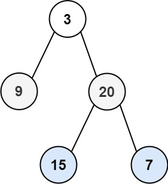

books / hot100 / 03-题解 / 08-二叉树
102. 二叉树的层序遍历
题目与约束
给你二叉树的根节点 root ，返回其节点值的 层序遍历 。 （即逐层地，从左到右访问所有节点）。
示例 1：

输入：root = [3,9,20,null,null,15,7]
输出：[[3],[9,20],[15,7]]
示例 2：
输入：root = [1]
输出：[[1]]
示例 3：
输入：root = []
输出：[]
提示：
- 树中节点数目在范围
[0, 2000]内 -1000 <= Node.val <= 1000
核心不变量
每轮先固定队列长度，它就是当前层节点数。
完整推导
思路推导
-
直觉与痛点（拿什么装节点？）：
我们要一层层横向处理，也就是处理完父节点后，得先把它所有的兄弟节点处理完，然后再去处理它的孩子。
这完美契合了“先进先出（FIFO）”的原则。所以，我们必须请出数据结构里的老大哥：队列（Queue）。
-
破局思路（雷达扫描法）：
- 先把树的根节点（司令）放进队列。
- 只要队列里还有人，就弹出来，记录它的值，然后把它的左小弟和右小弟按顺序排进队列的末尾。
-
关键追问（怎么区分哪一层是哪一层？）：
这是整道题唯一的难点。如果只是盲目地“弹出一个，塞进两个”，队列里的父节点和子节点很快就会混在一起，你根本不知道哪里是第一层的结束，哪里是第二层的开始。
破局绝招：提前快照（Snapshot）！
在每一层开始处理之前，先问一下队列：“你现在里面有几个人？”。这几个人，绝对就是当前这一层的所有节点！我们把这个数量存入变量
size中，然后严格执行size次弹出操作。在这个过程中新塞进去的孩子节点，全都会乖乖排在后面，留给下一轮循环去处理。Java 实现（BFS 黄金模板）
import java.util.ArrayList;
import java.util.LinkedList;
import java.util.List;
import java.util.Queue;
/**
* Definition for a binary tree node.
* public class TreeNode {
* int val;
* TreeNode left;
* TreeNode right;
* TreeNode() {}
* TreeNode(int val) { this.val = val; }
* TreeNode(int val, TreeNode left, TreeNode right) {
* this.val = val;
* this.left = left;
* this.right = right;
* }
* }
*/
class Solution {
public List<List<Integer>> levelOrder(TreeNode root) {
List<List<Integer>> res = new ArrayList<>();
// 边界防御：如果树是空的，直接返回空列表
if (root == null) {
return res;
}
// 1. 初始化队列，并将根节点入队
Queue<TreeNode> queue = new LinkedList<>();
queue.offer(root);
// 2. 雷达开启：只要队列不为空，说明还有节点没扫描完
while (!queue.isEmpty()) {
// 🌟 极其关键的一步：获取当前层的节点数量！
int levelSize = queue.size();
// 准备一个小篮子，装当前这一层的所有节点值
List<Integer> currentLevel = new ArrayList<>();
// 3. 严格按 levelSize 的数量进行遍历，不多也不少
for (int i = 0; i < levelSize; i++) {
// 弹出队头节点
TreeNode node = queue.poll();
currentLevel.add(node.val);
// 如果有左孩子，排进队列（留给下一层处理）
if (node.left != null) {
queue.offer(node.left);
}
// 如果有右孩子，排进队列（留给下一层处理）
if (node.right != null) {
queue.offer(node.right);
}
}
// 4. 当前层处理完毕，把小篮子放进最终的结果集里
res.add(currentLevel);
}
return res;
}
}
复杂度
- 时间复杂度：O(N)。每个节点进队一次、出队一次，并且做了一次常数时间的取值操作。
- 空间复杂度：O(N)。最坏的情况下（比如一棵完美的满二叉树），最下面一层的叶子节点数量大约是 N/2。当扫描到最底层时，队列里会同时装下这 N/2 个节点，所以空间复杂度是线性的。
易错点与扩展（面试高频考点）
- 踩坑警告：动态变化的
queue.size()（极其致命！）
- 新手最容易写出这样的作死代码：
for (int i = 0; i < queue.size(); i++) { ... } // 绝对会死循环或逻辑混乱！
- 原因解析：每次你在循环里执行
queue.offer()塞入新孩子时，queue.size()都在动态变大！导致你的for循环边界不断向后推移，新旧层彻底混在一起。必须在for循环外面用一个固定的int size把数量锁死！
- 面试追问：“既然层序遍历一维数组很简单，那你能用 DFS（深度优先搜索，递归）来实现这道层序遍历的二维返回格式吗？”
- 满分抢答：能！这也是高级解法。
- 思路简述：我们在进行深度优先搜索时，除了传节点，再传一个
level参数（代表当前在第几层，根节点是 0 层）。每次递归到一个节点时，如果发现最终结果集res的大小刚好等于level，说明这一层还没建过小篮子，先new一个列表放进去。然后直接把当前节点的值塞进res.get(level)里。由于先遍历左子树再遍历右子树，同一层里的数据天然是从左到右有序的！
力扣原题
其他语言实现
C++ 实现
实现来源：代码随想录（programmercarl.com）
class Solution {
public:
vector<vector<int>> levelOrder(TreeNode* root) {
queue<TreeNode*> que;
if (root != NULL) que.push(root);
vector<vector<int>> result;
while (!que.empty()) {
int size = que.size();
vector<int> vec;
// 这里一定要使用固定大小size，不要使用que.size()，因为que.size是不断变化的
for (int i = 0; i < size; i++) {
TreeNode* node = que.front();
que.pop();
vec.push_back(node->val);
if (node->left) que.push(node->left);
if (node->right) que.push(node->right);
}
result.push_back(vec);
}
return result;
}
};
Python 实现
实现来源：代码随想录（programmercarl.com）
# 利用长度法
# Definition for a binary tree node.
# class TreeNode:
# def __init__(self, val=0, left=None, right=None):
# self.val = val
# self.left = left
# self.right = right
class Solution:
def levelOrder(self, root: Optional[TreeNode]) -> List[List[int]]:
if not root:
return []
queue = collections.deque([root])
result = []
while queue:
level = []
for _ in range(len(queue)):
cur = queue.popleft()
level.append(cur.val)
if cur.left:
queue.append(cur.left)
if cur.right:
queue.append(cur.right)
result.append(level)
return result
Go 实现
实现来源：代码随想录（programmercarl.com）
/**
102. 二叉树的递归遍历
*/
func levelOrder(root *TreeNode) [][]int {
arr := [][]int{}